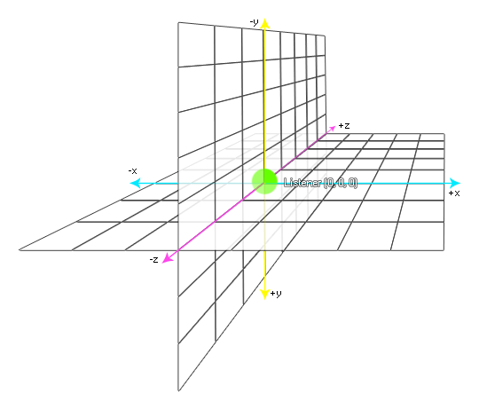
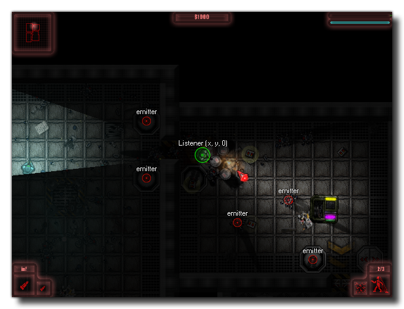

audio_listener_position(x, y, z);
| Argument | Description |
|---|---|
| x | The x position of the listener (default 0). |
| y | The y position of the listener (default 0). |
| z | The z position of the listener (default 0). |
Returns : N/A
With this function you can change the position of the listener within the 3D audio space. The example image below shows the default position for the listener in the audio space:

As you can see, the default position is (0, 0, 0) but you would normally use this function to move the listener around with the player object within your game and so change the way audio created by emitters is heard by the player,
for example, in the image below of a top down game, the player instance sets the listener which will cause the audio from the various emitters to "change" as the player moves around the level:

if speed > 0
{
audio_listener_position(x, y, 0);
}
The above code checks to see if the player instance speed is over 0 and if it is it updates the audio listener to the current x/y position.